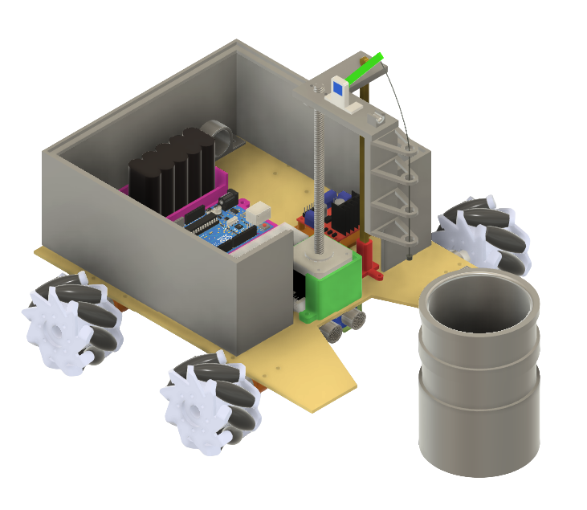
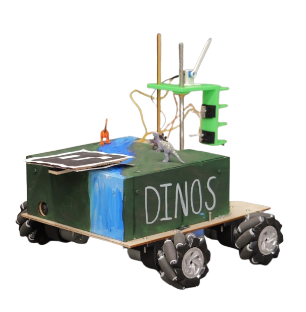
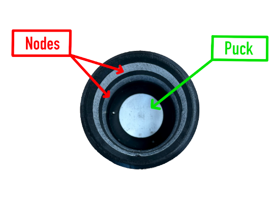
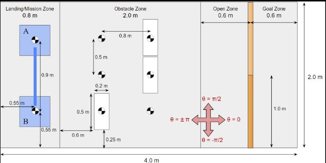

Over Terrain Vehicle Data Mission



Mission Objective
In ENES100: Introduction to Engineering Design, my team, the Data Dinos, designed an over-terrain robot to navigate a complex course and complete a data mission. The mission objectives were:
- Autonomously navigate through the obstacle course and approach the pylon
- Measure the duty cycle of the transmitted square wave from the nodes in the pylon
- Detect whether the puck inside the pylon is magnetic or not
- Successfully navigate to the goal zone
We were constrained to a budget of $300 and 5 minutes to complete the mission. This required extensive research, prototyping, testing, and collaboration to complete the goal.


Process and Methodology
Vertical Deployment
A stepper motor drives a lead screw, lowering a 3D-printed arm assembly into a pylon.
Sensor Assembly
At the top, a potentiometer-mounted arm holds a string with a small magnet on the end. The potentiometer tracks the arm's angle and the magnet is used to attract the puck if it is magnetic.
Data Collection
Once inserted, the OTV reverses until the arm's contact wires touch the pylon's internal nodes, allowing the system to read the duty cycle of a transmitted square wave.
Magnetic Puck Identification
During retraction, if the puck is magnetic, the magnet lifts it, altering the potentiometer's angle due to the added weight. The microcontroller detects this change and flags it as a positive magnetic reading. If no angle change is recorded, the puck is classified as non-magnetic.
Autonomous Navigation
- Overhead Vision System: An ArUco marker placed on top of the OTV was tracked by an overhead camera, which compared it to reference markers at the arena corners. The system then calculated the OTV's position and heading and sent that information over WiFi for autonomous navigation.
- Ultrasonic Sensor: Used to detect objects in front of the OTV, which was then implemented into the code to successfully avoid the obstacles.
- Mecanum Wheels: Used to easily rotate in place and move left and right without turning.
- Control Algorithm: Wrote code in Arduino with a logical control algorithm to successfully navigate and complete the mission.
Design & Hands-on Prototyping
- Brainstormed and designed multiple prototypes, creating 25+ detailed parts and 3D models in Fusion 360, and then 3D printed the components.
- Researched and calculated proper voltage and amperage for the battery to power the Arduino and 4 motors. Successfully designed the circuit configuration and soldered all of the wires.
- Used a laser cutter to create the wood chassis.
Collaboration and Implementation
- Worked closely with engineers of all disciplines.
- Served as Lead Programmer, directing all software development and control system implementation.
- Created milestones with checkpoints to ensure the project was staying on task by using a GANTT Chart.
Results
- Completed the mission under budget, spending less than $200 of the $300 allowance, and achieved a perfect score to win the class competition.
- Nominated for the "ENES100 Project Most Innovative Design Award" out of all six classes for our creative approach to solving the mission.
- Although successful, the OTV moved slower than expected because the battery couldn't supply enough current to all four motors and the stepper motor simultaneously.